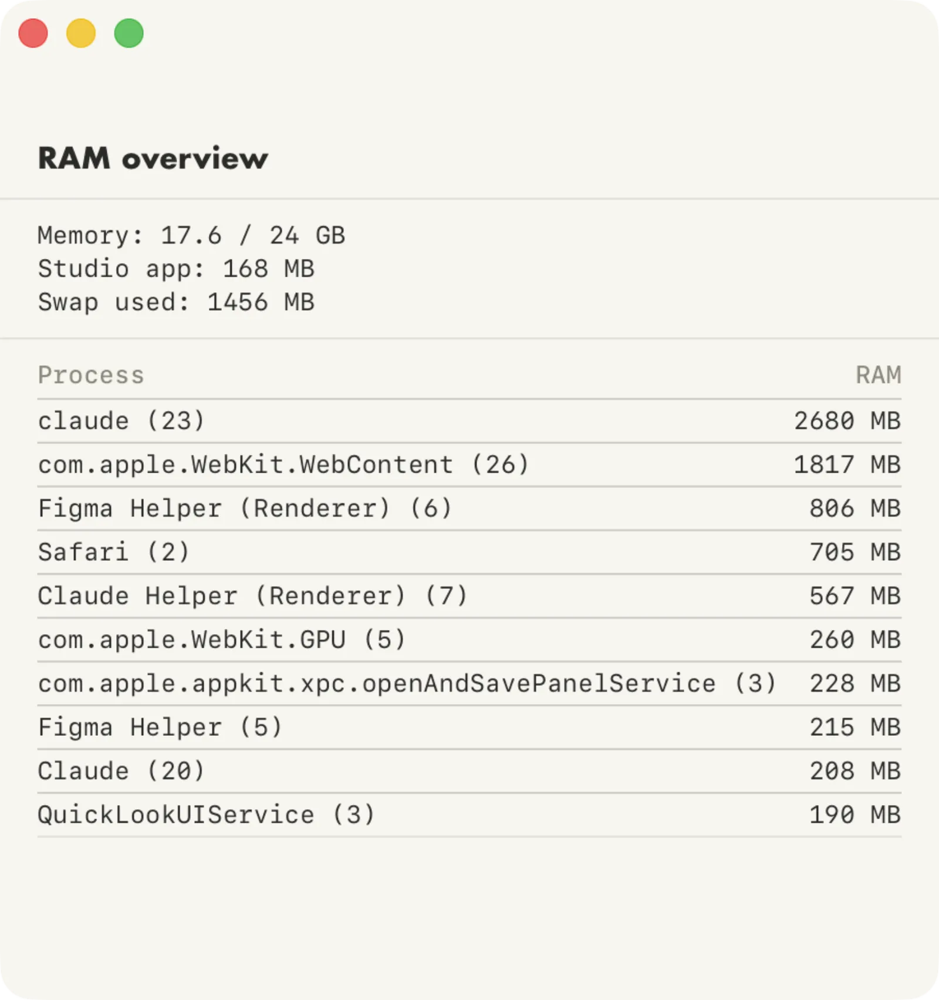

RAM Overview
V.0.2
This is a second iteration of a super simple idea. I have 24 GB of RAM on my MacBook Pro. That should be plenty, but somehow I would get to a point where everything is lagging like crazy. I want to this info at a glance, without opening Activity Monitor. If the number gets close to 20, I click it to see what's hogging the memory. It's usually extra browser tabs, or a dev server that has been left running.
It sits in my top menu bar and expands if I click it. I had looked for an existing app that does this, but couldn't find anything that's this simple. I don't need a meter of everything, I just need to know when to close some apps.